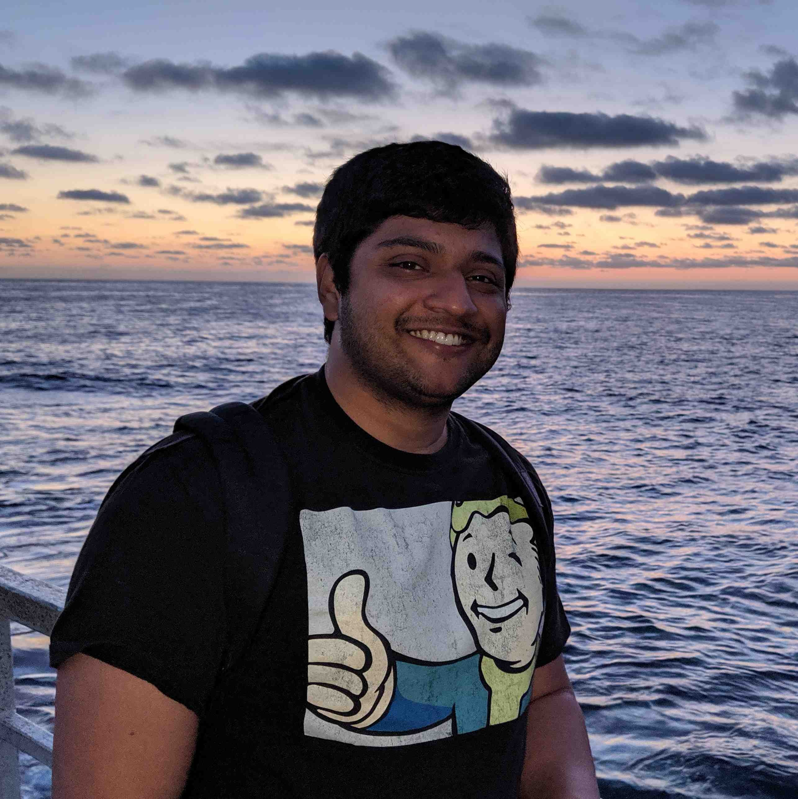

|  | Shurjo BanerjeePhD Student @ The University of Michigan, Ann ArborB.S. in Computer Engineering @ The Georgia Institute of Technology, Atlanta |
I am a 5th year PhD student at The University of Michigan working with Dr. Jason Corso. I am broadly interested in deep learning and it's applications to deep reinforcement learning, incremental learning and vision-and-language problems.
News | |||
| Invited Talk Stanford | @ Stanford NLP Seminar | websiteslides | October 2020 |
| Organizer ECCV | Embodied Vision, Actions & Language Workshop (EVAL) | website | August 2020 |
| New Position Amazon | Visiting Academic at Alexa AI | August 2020 | |
| Invited Talk ACL–NLP4ConvAI | @ Second Workshop on NLP for Conversational AI | websiteslides | July 2020 |
| Organizer ACL | First Workshop on Advances in Language and Vision Research (ALVR) | website | July 2020 |
| Invited Talk NeurIPS–ViGIL | @ Visually Grounded Interaction and Language (ViGIL) Workshop | websiteslidesvideo | December 2019 |
| Invited Talk University of Southern California | @ USC AI Rising Stars Symposium | slides | December 2019 |
| Invited Talk University of Utah | @ Utah Robotics Center Seminar | slides | November 2019 |
| Invited Talk IROS–SPAR | @ Semantic Policy and Action Representations for Autonomous Robots (SPAR) Workshop | website | November 2019 |
| Invited Talk Microsoft Research | Vision-and-Dialog Navigation | slidesvideo | July 2019 |
| Co-Chair NAACL | Combined Workshop on Spatial Language Understanding (SpLU) and Grounded Communication for Robotics (RoboNLP) | website | June 2019 |
| Organizer SIGdial | Special Session on Physically Situated Dialogue | website | July 2018 |
| Organizer RSS | Workshop on Models and Representations for Natural Human-Robot Communication | website | June 2018 |
| New Position UW | Postdoc with Luke Zettlemoyer | June 2018 | |
| Dissertation Defense UT Austin | Continually Improving Grounded Natural Language Understanding through Human-Robot Dialog | April 2018 | |
Conference and Journal Papers |
| 2020 |
| The RobotSlang Benchmark: Dialog-guided Robot Localization and Navigation Shurjo Banerjee, Jesse Thomason, and Jason J. Corso. The Conference on Robot Learning (CORL), 2020. papervideo @inproceedings{robotslang:corl20, title={The RobotSlang Benchmark: Dialog-guided Robot Localization and Navigation}, author={Shurjo Banerjee and Jesse Thomason and Jason J. Corso}, booktitle={The Conference on Robot Learning (CORL)}, year={2020}, url={} } |